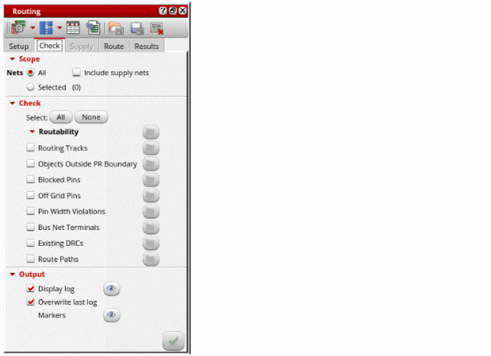
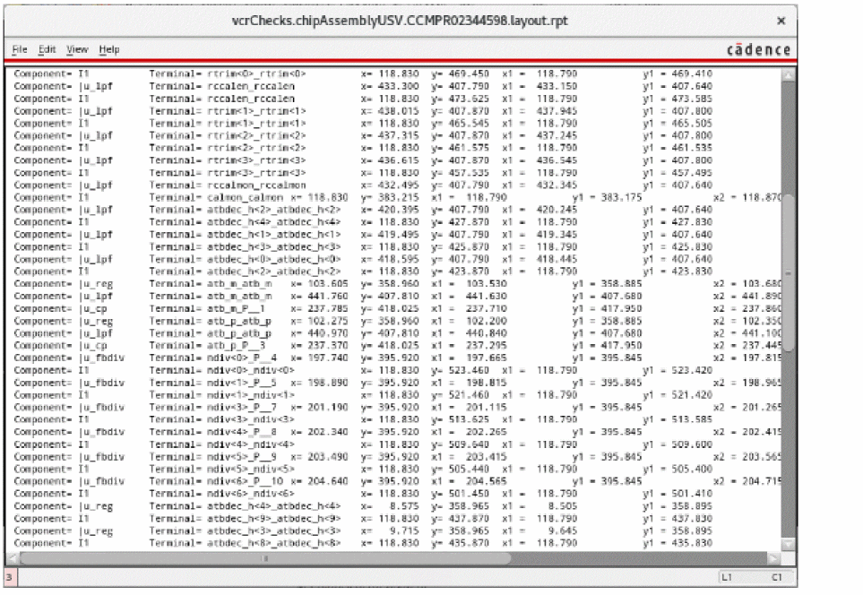
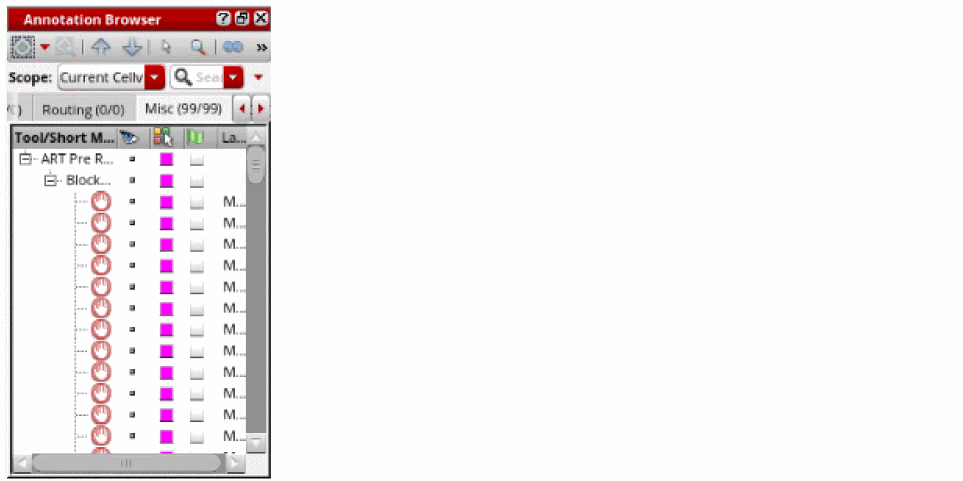

Checking Layout Routability in Chip Assembly
You can run pre-routing checks to detect design issues before routing a design. Running the checks lets you identify potential situations or objects that may cause trouble for the router later in the flow.
To check the routability of a design:
- Open the design in Layout MXL.
-
Choose Window – Assistants – Routing.
Alternatively, right-click anywhere on the layout window menu bar and choose Assistants – Routing.
The Routing Assistant is displayed. -
In the Routing assistant, click the Check tab.
 - Click All to select all pre-routing checks or select one or more checks by clicking the check box next to the pre-route check names.
- Deselect the Routing Tracks and Existing DRCs checks.
-
Click the Run pre-route checks
 button.
button.
Afteryou have run the checks, the status flags appear in green, orange, and red colors. A green flag indicates that the check was passed, orange indicates a warning, and red indicates an error. Ensure that no red flags appear. This means that the design is routable.
Clicking a flag button takes you to the location in the log file where that check was run. -
Click the button next to the Display log option to view the log file and check for any issues.
 -
To view the issues reported for the pre-route checks, click the button next to the Markers
option. The issues are displayed in the Misc tab of the Annotation Browser.

Related Topics
Routing Assistant User Interface for Chip Assembly Routing Flow
Configuring Chip Assembly Routing Settings
Viewing and Analyzing Chip Assembly Routing Results
Return to top